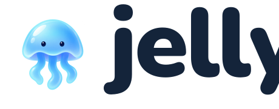

The complete design reference
Serious help.
A little personality.
A friendly home for your agents. Clear conversations, effortless project switching, and small moments of delight.

01 · Brand
The approved Friendly bell, regular wordmark, colours, typography, voice, and twelve sea companions.
Ready to helpCreate agent
02 · UI kit
Shared tokens and components for light and dark, desktop and mobile.
03 · Motion
Quiet working animation, purposeful transitions, reduced motion, and a tiny Easter egg.
Product reference
Every important moment has a home.
40 screen scenarios, each available at desktop, tablet, and mobile widths, in light or dark. These are interactive fixtures; no user data or live agent is changed.
All the exploration, preserved
The current app captures, three original directions, sea avatar collection, all six logos, and the earlier project concept are archived with their prompts.
Browse the archive →